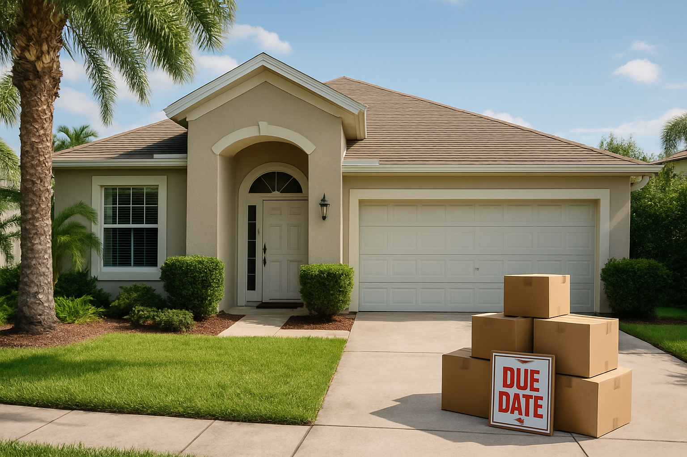

Prep work takes longer than planned.
Cleanup, repairs, staging, photography, and contractor scheduling can consume the exact time the seller was hoping to preserve.
Urgent Timeline · 2026 Florida Guide
If a move, job change, inherited-property deadline, divorce, or financial shift means you need certainty now, this page is built to help you compare the real speed of a listing against a direct as-is sale.
Urgent Sale Reality
Most people searching for a fast home sale in Florida are not trying to beat the market by a few days. They are trying to solve a timing problem that already exists, and a standard listing timeline may not match it.
The challenge is not just speed. It is certainty. A property can go under contract and still miss the seller's actual deadline because of repairs, buyer financing, appraisal issues, inspection demands, or delays coordinating move-out and closing.
When the real goal is getting from today's problem to a dependable closing date, many sellers stop asking, "What is the highest possible price?" and start asking, "What can actually close in time without creating a second problem?"
Where Listings Break
A normal listing can work when the home is ready, the seller has time, and the next move is flexible. Sellers on an urgent timeline often do not have those conditions.
Cleanup, repairs, staging, photography, and contractor scheduling can consume the exact time the seller was hoping to preserve.
A signed contract is not the same as a closed sale. Financing, appraisal, and inspection steps often create delays that urgent sellers cannot absorb.
When the seller is already coordinating another home, a job transfer, or family change, a delayed closing can trigger holding-cost pressure on both sides.
Timeline Pressure
The typical urgent sale is not dramatic. It is practical pressure stacking up all at once: another closing date is approaching, the house still needs work, the seller is balancing boxes and paperwork, and every extra week creates more cost or stress.
In that situation, the cleanest outcome is often the path with the fewest moving parts. That is why many urgent sellers choose a direct sale when certainty matters more than stretching the process for another marketing cycle.
Create My Offer
Common Urgent-Sale Scenarios
The next move is already on the calendar, so the sale has to fit the deadline instead of extending it.
Bridge periods create immediate pressure when the old house is still carrying mortgage, utilities, insurance, and upkeep.
Families often need a faster path because cleanout, estate coordination, and out-of-area ownership make a long listing difficult.
Another vacancy cycle, repair round, or tenant issue can turn an ordinary sale into a deadline-driven one.
When the property is not ready for the market, repairing it first can consume the exact time the seller no longer has.
Divorce, family changes, and financial resets often create a need for a defined end date more than a drawn-out listing strategy.
Fast-Sale Comparison
The right answer depends on the condition of the house, the actual deadline, and how much uncertainty the seller can still tolerate.
This can work if the deadline moves, the house is market-ready, and the seller is comfortable spending more time and money before the home goes live.
This can work when the home shows well and the seller still has enough time for buyer financing, inspections, negotiations, and possible delays.
This is often the cleanest option when the seller needs a dependable closing date, does not want repair work, and values certainty more than a long listing process.
Urgent Timeline FAQ
It depends on title clarity, payoff timing, and access to the property, but many direct sales can close much faster than a financed listing because there is no lender approval or repair negotiation slowing the file down.
Yes. Many urgent sellers still have boxes, furniture, or leftover belongings in the property. That is common, and it usually does not need to stop the conversation.
That is one of the most common reasons sellers compare a direct sale. When the current house is tied to the next move, certainty can matter more than stretching for a longer market process.
No. It means comparing total outcome, not just headline price. Many urgent sellers save time, carrying costs, repair spending, and failed-deal risk by choosing a faster, cleaner closing path.
County-Specific Pages
Use these links to move from the statewide guide into the county-level version that matches the seller's location and search intent more closely.
Browse all county-specific urgent timeline pages built under this statewide guide so the local version is easy to find and crawl.
View DirectoryOpen a county-specific version of the urgent timeline page with stronger local targeting and internal links.
View County PageOpen a county-specific version of the urgent timeline page with stronger local targeting and internal links.
View County PageOpen a county-specific version of the urgent timeline page with stronger local targeting and internal links.
View County PageFast Next Step
Call now or move into the offer page to share your timeline, ZIP, and property details. We will help you compare the fastest practical next step without forcing you through a long prep cycle first.